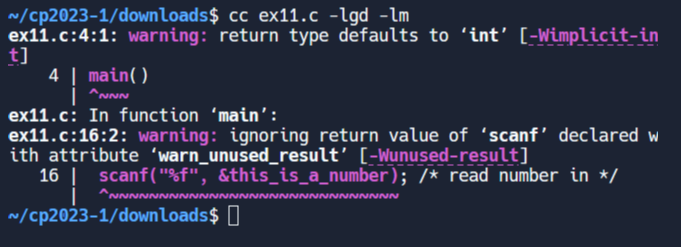
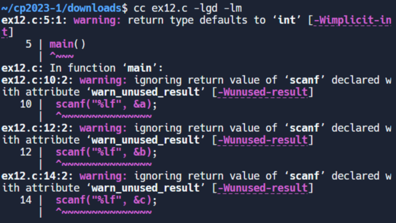
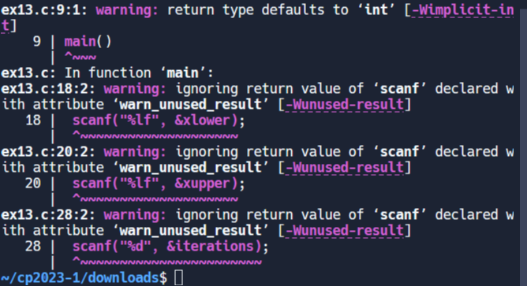
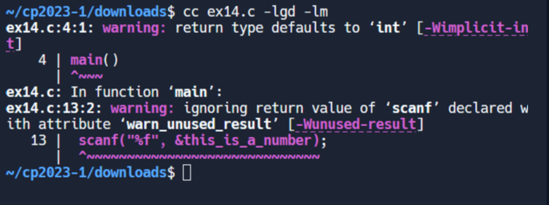
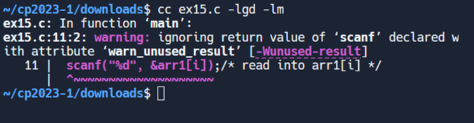
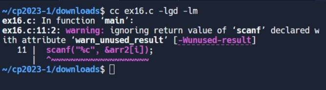
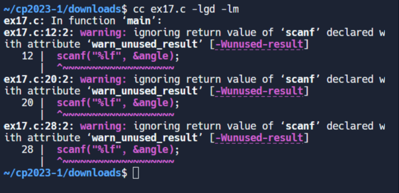
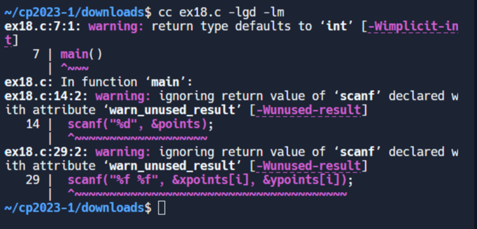
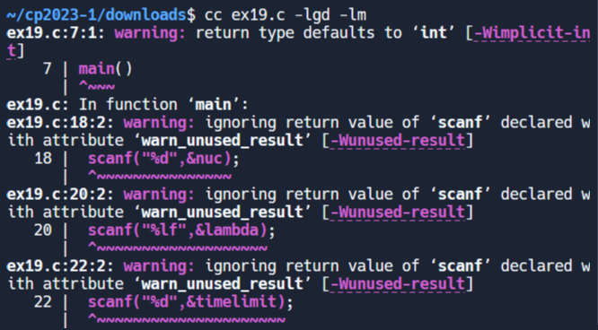

jsliu_c_programming: <<
Previous Next >> W16
introduce to c:
1.
#define _CRT_SECURE_NO_WARNINGS
#include<stdio.h>
/* demonstrate a nested forloop */
main()
{
float this_is_a_number, total;
int i, j;
total = 0;
/* outer forloop goes round 10 times */
for (i = 0;i < 10;i++)
{
/* inner forloop goes round twice */
for (j = 0;j < 2;j++)
{
printf("Please enter a number:\n ");
scanf("%f", &this_is_a_number); /* read number in */
total = total + this_is_a_number;
}
}
printf("Total Sum is = %f\n", total);
}

2.
/*quad3 - first attempt at quadratic solver*/
#define _CRT_SECURE_NO_WARNINGS
#include <stdio.h>
#include <math.h>
main()
{
double a, b, c, xa, xb;
/* prompt and read in coefficients of x^2,x and constant */
printf("enter a value");
scanf("%lf", &a);
printf("enter b value");
scanf("%lf", &b);
printf("enter c value");
scanf("%lf", &c);
if (pow(b, 2) < 4 * a*c) /* test for real root */
{
/* not real root */
printf("Not a real root");
}
else
{
/* real root */
xa = (-b + sqrt(pow(b, 2) - (4 * a*c))) / (2 * a);
xb = (-b - sqrt(pow(b, 2) - (4 * a*c))) / (2 * a);
printf("Roots are %lf and %lf", xa, xb);
}
}

3.
/* Montecarlo */
/* integration using monte carlo */
/* by counting relative areas */
/* integrates y=x^2 to your specified limits */
#define _CRT_SECURE_NO_WARNINGS
#include <stdio.h>
#include <stdlib.h>
#include <math.h>
main()
{
double x, y;
double yupper, ylower, xupper, xlower;
double montearea, area;
double totalexparea, totalarea;
int j;
int iterations;
printf("enter lower limit\n");
scanf("%lf", &xlower);
printf("enter upper limit\n");
scanf("%lf", &xupper);
printf("xlower %lf xupper %lf\n", xlower, xupper);
yupper = pow(xupper, 2);
ylower = pow(xlower, 2);
printf("ylower %lf yupper %lf\n", ylower, yupper);
area = yupper * (xupper - xlower);
printf("outer area is %lf\n", area);
printf("enter iterations \n");
scanf("%d", &iterations);
totalarea = 0;
totalexparea = 0;
for (j = 1;j < iterations;j++)
{
x = rand() % 1000;/* generate random number for x up to 1000 */
y = rand() % 1000;/* generate random number for y up to 1000 */
y = y / 1000;/* Divide by 1000 so our number is between 0 and 1 */
x = x / 1000;/* Divide by 1000 so our number is between 0 and 1 */
x = xlower + (xupper - xlower)*x;/* Adjust x value to be
between required limits */
y = yupper * y;/* Adjust y value to be between required limits */
if (x >= xlower)
{
totalarea = totalarea + 1;/* add 1 to count of points
within whole area */
/* test if this y value is below the curve */
if (y <= pow(x, 2))
{
totalexparea = totalexparea + 1;/* add 1 to count
of points below the curve */
}
}
}
if (totalarea != 0)
{
montearea = area * (totalexparea / totalarea);/* calculate the
area below the curve */
}
printf("monte area is %lf\n", montearea);
}

4.
#define _CRT_SECURE_NO_WARNINGS
#include<stdio.h>
/* demonstrate a do loop */
main()
{
float this_is_a_number, total;
int i;
total = 0;
i = 0;
/* do loop goes round until the value of i reaches 10 */
do {
printf("Please enter a number:\n ");
scanf("%f", &this_is_a_number);
total = total + this_is_a_number;
i++;
}while( i < 10);
printf("Total Sum is = %f\n", total);
}

5.
#define _CRT_SECURE_NO_WARNINGS
#include<stdio.h>
/* program to show array use */
int main()
{
int arr1[8];/* define an array of 8 integers */
int i;
printf("enter 8 integer numbers\n");
for (i = 0;i < 8;i++)
{
scanf("%d", &arr1[i]);/* read into arr1[i] */
}
printf("Your 8 numbers are \n");
for (i = 0;i < 8;i++)
{
printf("%d ", arr1[i]);
}
printf("\n");
}

6.
#define _CRT_SECURE_NO_WARNINGS
#include<stdio.h>
/* program to show character array use */
int main()
{
char arr2[10];/* define array of 10 characters */
int i;
printf("enter 10 characters \n");
for (i = 0;i < 10;i++)
{
scanf("%c", &arr2[i]);
}
printf("Your 10 characters are \n");
for (i = 0;i < 10;i++)
{
printf("%c ", arr2[i]);
}
printf("\n");
}

7.
#define _CRT_SECURE_NO_WARNINGS
#include <stdio.h>
#include <math.h>
/* Illustration of the common trigonometric functions */
int main()
{
#define PI 3.14159265
double angle, radianno, answer;
/* The cosine function */
printf("cosine function:\n ");
printf("Please enter angle in degrees:\n ");
scanf("%lf", &angle);
printf("You entered %lf\n", angle);
radianno = angle * (2 * PI / 360);
answer = cos(radianno);
printf("cos of %lf is %lf\n", angle, answer);
/* The sine function */
printf("sine function:\n ");
printf("Please enter angle in degrees:\n ");
scanf("%lf", &angle);
printf("You entered %lf\n", angle);
radianno = angle * (2 * PI / 360);
answer = sin(radianno);
printf("sin of %lf is %lf\n", angle, answer);
/* The tangent function */
printf("tangent function:\n ");
printf("Please enter angle in degrees:\n ");
scanf("%lf", &angle);
printf("You entered %lf\n", angle);
radianno = angle * (2 * PI / 360);
answer = tan(radianno);
printf("tan of %lf is %lf\n", angle, answer);
return 0;
}

8.
/* regression */
/* user enters points.*/
/* regression of y on x calculated */
#define _CRT_SECURE_NO_WARNINGS
#include <stdio.h>
#include <math.h>
main()
{
float xpoints[10],ypoints[10];
float sigmax,sigmay,sigmaxy,sigmaxsquared,xbar,ybar;
float fltcnt,sxy,sxx,b,a;
int i,points;
printf("enter number of points (max 10 ) \n");
scanf("%d", &points);
if(points>10)
{
printf("error - max of 10 points\n");
}
else
{
sigmax=0;
sigmay=0;
sigmaxy=0;
sigmaxsquared=0;
/* user enters points from scatter graph */
for(i=0;i<points;i++)
{
printf("enter point (x and y separated by space) \n");
scanf("%f %f", &xpoints[i], &ypoints[i]);
sigmax=sigmax+xpoints[i];
sigmay=sigmay+ypoints[i];
sigmaxy=sigmaxy+xpoints[i]*ypoints[i];
sigmaxsquared=sigmaxsquared+(float)pow(xpoints[i],2);
}
printf("points are \n");
for(i=0;i<points;i++)
{
printf(" \n");
printf("%f %f", xpoints[i], ypoints[i]);
}
printf(" \n");
fltcnt=(float)points;
/* Calculation of (xbar,ybar)- the mean points*/
/* and sxy and sxx from the formulas*/
xbar=sigmax/fltcnt;
ybar=sigmay/fltcnt;
sxy=(1/fltcnt)*sigmaxy-xbar*ybar;
sxx=(1/fltcnt)*sigmaxsquared-xbar*xbar;
/* calculation of b and a from the formulas */
b=sxy/sxx;
a=ybar-b*xbar;
/* Print the equation of the regression line */
printf("Equation of regression line y on x is\n ");
printf(" y=%f + %fx", a,b);
printf(" \n");
}
}

9.
/* radioactive decay simulation */
#define _CRT_SECURE_NO_WARNINGS
#include <stdio.h>
#include <math.h>
#include <stdlib.h>
#include <time.h>
main()
{
int j,timelimit,nuc;
double randnumber,timeinc,lambda,timecount,probunittime;
FILE *fptr;
time_t t;
srand((unsigned) time(&t)); /* random number generator seed */
fptr=fopen("radioact.dat","w");
/* Ask user to input specific data */
/* initial number of nuclei, the value of lambda, time for experiment */
printf("Enter initial number of nuclei : ");
scanf("%d",&nuc);
printf("Enter lambda : ");
scanf("%lf",&lambda);
printf("Enter time : ");
scanf("%d",&timelimit);
/* time increment of loop */
timeinc=0.001/lambda;
printf("Time increment :%lf",timeinc);
/* (delta t * lambda) */
probunittime=0.001*lambda;
timecount=0;
/* Monte Carlo loop */
while(timecount<=timelimit)
{
fprintf(fptr,"%lf %d\n",timecount,nuc);
timecount=timecount+timeinc;
for(j=0;j<=nuc;j++)
{
randnumber=rand()%1000;
randnumber=randnumber/1000;
/* Monte Carlo method checks random number less than (delta t *
lambda) */
if(randnumber<=probunittime)
nuc=nuc-1;/* If less, then prob. that nucleus has
decayed */
if(nuc<=0)
goto nuclimitreached;
}
}
nuclimitreached: fclose(fptr); /* nuclei limit or time limit reached */
}

10.
/* Buffon's Needle Simulation (Monte Carlo)*/
#define _CRT_SECURE_NO_WARNINGS
#include <stdlib.h>
#include <stdio.h>
#include <math.h>
#include <time.h>
#define PI 3.141592654
main()
{
time_t t;
int i, throws, count;
double randno, anglerand;
srand((unsigned)time(&t));/* set the random number seed */
printf("Enter number of throws ");
scanf("%d", &throws);
count = 0;
for (i = 1; i <= throws; i++)
{
randno = rand() % 1000;
randno = randno / 1000;/* randno is the random number */
anglerand = rand() % 1000;
anglerand = anglerand / 1000;
anglerand = 0.5*PI*anglerand; /* anglerand is the angle random
number*/
if (randno <= sin(anglerand))
count = count + 1; /* Add to count */
}
printf("PI is %lf \n", 2 * (double)i / (double)count);
}

jsliu_c_programming: <<
Previous Next >> W16